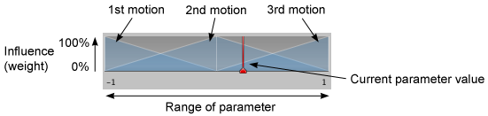

1D Blending
The first option in the Inspector of a Blend Node is the Blend Type. This drop-down is used to select one of the different blend types that can blend according to one or two parameters. 1D Blending blends the child motions according to a single parameter.
After setting the Blend Type, the first thing you need is to select the Animation Parameter that will control this Blend Tree. In this example, the parameter is direction which varies between -1.0 (left) and +1.0 (right), with 0.0 denoting a straight run without leaning.
Then you can add individual animations by clicking the small "+" button and selecting Add Motion Field from the popup menu. When you're done, it should look something like this:

The diagram at the top of the Inspector shows the influence of each of the child motions as the parameter varies between its minimum and maximum values. Each motion is shown as a little blue pyramid (the first and last are only shown in half), and if you click and hold down the left mouse button on one them, the corresponding motion is highlighted in the motion list below. The peak of each pyramid defines the parameter value where the motion has full influence, meaning that its animation weight is 1 and the other animations have a weight of 0. This is also called the threshold of the motion.

The red vertical bar indicates the value of the Parameter. If you press Play in the Preview at the bottom of the Inspector and drag the red bar in the diagram left and right, you can see how the value of the parameter is controlling the blending of the different motions.
Parameter Range
The range of the parameter used by the Blend Tree is shown below the diagram as two numbers to the left and right. Either one of them can be changed by clicking on the number and dragging left or right with the mouse. Note that the values correspond to the threshold of the first and last motion in the motion list.
Thresholds
You can change the threshold value of a motion by clicking on its corresponding blue pyramid in the diagram and dragging it left or right. If the "Automate Thresholds" toggle is not enabled, you can also edit the threshold value of a motion in the motion list by typing in a number in the number field in the Threshold column.
Below the motion list is the checkbox Automate Thresholds. Enabling it will distribute the thresholds of the motions evenly across the parameter range. For example, if there are five clips and the parameter ranges from -90 to +90, the thresholds will be set to -90, -45, 0, +45 and +90 in order.
The Compute Thresholds drop-down will set the thresholds from data of your choice obtained from the root motions in the Animation Clips. The data that is available to choose from is speed, velocity x, y, or z, and angular speed in degrees or radians. If your parameter corresponds to one of these properties, you can compute the thresholds using the Compute Thresholds drop-down.
| Property: | Function: |
|---|---|
| Speed | Sets the threshold of each motion according to its speed (the magnitude of the velocity). |
| Velocity X | Sets the threshold of each motion according to its velocity.x. |
| Velocity Y | Sets the threshold of each motion according to its velocity.y. |
| Velocity Z | Sets the threshold of each motion according to its velocity.z. |
| Angular Speed (Rad) | Sets the threshold of each motion according to its angular speed in radians per second. |
| Angular Speed (Deg) | Sets the threshold of each motion according to its angular speed in degrees per second. |
Say, for example, you had a walk animation that covered 1.5 units per second, a jog at 2.3 units per second, and a run at 4 units per second, choosing the Speed option from the drop-down would set the parameter range and thresholds for the three animations based on these values. So, if you set the speed parameter to 3.0, it would blend the jog and run with a slight bias toward the jog.